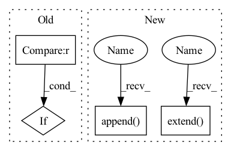

Pattern ID :1730

Before Change
]
)
elif stride == 2:
blocks.append(
nn.ConvTranspose2d(channel, out_channel, 4, stride=2, padding=1)
)
After Change
if i == 0:
blocks.extend([nn.ConvTranspose2d(channel, channel // 2, 4, stride=2, padding=1), nn.ReLU(inplace=True)])
elif i + 1 < strides:
blocks.extend([nn.ConvTranspose2d(channel // 2, channel // 2, 4, stride=2, padding=1), nn.ReLU(inplace=True)])
else:
blocks.append(nn.ConvTranspose2d(channel // 2, out_channel, 4, stride=2, padding=1))
self.blocks = nn.Sequential(*blocks)
def forward(self, input):
In pattern: SUPERPATTERN
Frequency: 3
Non-data size: 4
Instances
Fragment ID: 4377554
Project Name: tgisaturday/dalle-lightning
Commit Name: 817777e19a455605c54f26d77165c705193384e0
Time: 2021-08-17
Author: j@doodlebot.ai
File Name: pl_dalle/models/vqvae2.py
M Class Name: Decoder
N Class Name: Decoder
M Method Name: __init__(7)
N Method Name: __init__(7)
M Parent Class: nn.Module
N Parent Class: nn.Module
M File Name: pl_dalle/models/vqvae2.py
N File Name: pl_dalle/models/vqvae2.py
M Start Line: 277
M End Line: 290
N Start Line: 279
N End Line: 298
'>
Before Change
self.bn3 = nn.BatchNorm2d(out_planes)
self.shortcut = nn.Sequential()
if stride == 1 and in_planes != out_planes:
self.shortcut = nn.Sequential(
nn.Conv2d(in_planes, out_planes, kernel_size=1, stride=1, padding=0, bias=False),
nn.BatchNorm2d(out_planes),
)
After Change
hidden_dim = int(round(inp * expand_ratio))
self.use_res_connect = self.stride == 1 and inp == oup
layers: List[nn.Module] = []
if expand_ratio != 1:
layers.append(ConvBNReLU(inp, hidden_dim, kernel_size=1))
layers.extend([
ConvBNReLU(hidden_dim, hidden_dim,
stride=stride, groups=hidden_dim),
nn.Conv2d(hidden_dim, oup, 1, 1, 0, bias=False),
norm_layer(oup),
])
self.conv = nn.Sequential(*layers)
self.out_channels = oup
def forward(self, x: Tensor) -> Tensor:
'>
Fragment ID: 4377552
Project Name: tuttelikz/farabio
Commit Name: 1d44294f1fa3a0a8cd95bdbad9f2e4f53b43098b
Time: 2021-08-02
Author: s.askaruly@gmail.com
File Name: farabio/models/classification/conv/mobilenetv2.py
M Class Name: Block
N Class Name: InvertedResidual
M Method Name: __init__(5)
N Method Name: __init__(5)
M Parent Class: nn.Module
N Parent Class: nn.Module
M File Name: farabio/models/classification/conv/mobilenetv2.py
N File Name: farabio/models/classification/conv/mobilenetv2.py
M Start Line: 13
M End Line: 32
N Start Line: 50
N End Line: 73
'>
Before Change
layers += [
ResBlock(resl2ch[resl], resl2ch[resl//2])
]
if resl == list(resl2ch.keys())[1]:
break
layers.append(MiniBatchStd())
layers += [
After Change
nn.LeakyReLU(0.2, inplace=True)
)
resl = image_size
blocks = []
while resl > 4:
resl = resl // 2
channels *= 2
ichannels, ochannels = ochannels, check_c(channels)
blocks.append(
DBlock(ichannels, ochannels, block_num_conv)
)
blocks.append(MiniBatchStdDev(mbsd_groups))
blocks.extend([
Conv2d("elr", ochannels+1, ochannels, 3, padding=1),
nn.LeakyReLU(0.2, inplace=True),
Flatten(),
Linear("elr", ochannels*(resl**2), ochannels),
nn.LeakyReLU(0.2, inplace=True),
Linear("elr", ochannels, 1)
])
self.blocks = nn.Sequential(*blocks)
def forward(self, x):
x = self.from_rgb(x)
x = self.blocks(x)
'>
Fragment ID: 4377556
Project Name: stomoya/animeface
Commit Name: b3652bae109c713da926d5532eb014b02135da52
Time: 2020-12-14
Author: blackie0110@gmail.com
File Name: implementations/StyleGAN2/model.py
M Class Name: Discriminator
N Class Name: Discriminator
M Method Name: __init__(7)
N Method Name: __init__(1)
M Parent Class: nn.Module
N Parent Class: nn.Module
M File Name: implementations/StyleGAN2/model.py
N File Name: implementations/StyleGAN2/model.py
M Start Line: 354
M End Line: 387
N Start Line: 364
N End Line: 389